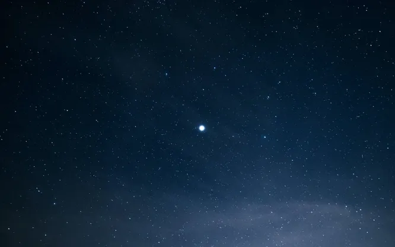
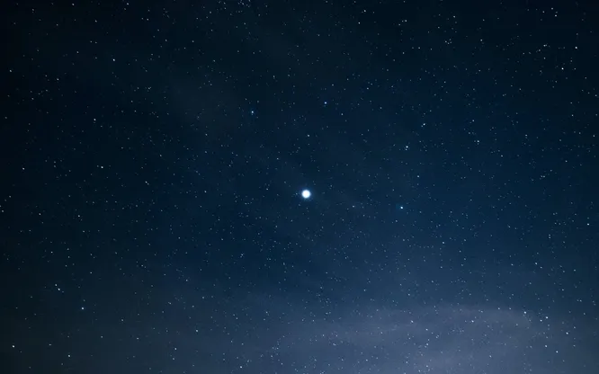

Галактика

 



Наша галактика называется Млечный путь. Если бы мы могли взглянуть на неё со
стороны, то форма её напомнила бы нам спираль. Конечно, мы не можем увидеть её в
цельности, поскольку сами являемся её частью, однако, если оказаться в августовскую
ночь за пределами крупного населенного пункта и взглянуть на небо, можно увидеть
соседние с нами звезды.

 Все они являются частью нашей галактики и это только ничтожно малая её часть. В 2018
году аппарат Gaia представил одну из самых подробных карт Млечного пути, согласно
которой в нем существует почти 1,7 миллиарда звезд, однако их реальное число может
быть гораздо больше и варьироваться от 100 до 400 млрд. звезд по разным оценкам.
Все они являются частью нашей галактики и это только ничтожно малая её часть. В 2018
году аппарат Gaia представил одну из самых подробных карт Млечного пути, согласно
которой в нем существует почти 1,7 миллиарда звезд, однако их реальное число может
быть гораздо больше и варьироваться от 100 до 400 млрд. звезд по разным оценкам.
Млечный путь являются частью Местной группы галактик (всего их чуть больше
100 в составе группы).
 Ближайшая к нам галактика – Галактика Андромеды (известная ещё как Туманность
Андромеды), она находится от нас на расстоянии порядка 800 килопарсек.
Ближайшая к нам галактика – Галактика Андромеды (известная ещё как Туманность
Андромеды), она находится от нас на расстоянии порядка 800 килопарсек.
 Она, как и наша, имеет форму спирали, но при этом немного крупнее. Впервые
Туманность Андромеды упоминается ещё в X веке н.э., а уже в веке XX она была
облюбована фантастами, связывавшими с ней надежды встретить «братьев по разуму».
Также поблизости от нас находятся Малое и Большое Магеллановы облака. Если же
представить себе карту Млечного пути, то окажется, что наша Солнечная система
находится на его условной «окраине», в небольшом рукаве под названием рукав Ориона
(или Шпора Ориона).
Она, как и наша, имеет форму спирали, но при этом немного крупнее. Впервые
Туманность Андромеды упоминается ещё в X веке н.э., а уже в веке XX она была
облюбована фантастами, связывавшими с ней надежды встретить «братьев по разуму».
Также поблизости от нас находятся Малое и Большое Магеллановы облака. Если же
представить себе карту Млечного пути, то окажется, что наша Солнечная система
находится на его условной «окраине», в небольшом рукаве под названием рукав Ориона
(или Шпора Ориона).